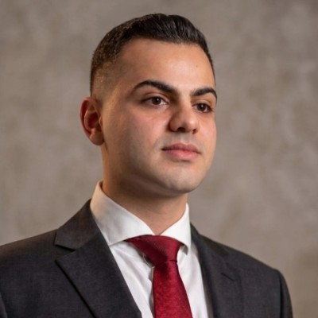

2026 – now
Instructor, American University of Beirut
Graduate courses I teach:
Advanced Machine LearningOptimization and Nonlinear Problems
AI Researcher in multilingual and multimodal language models, Beirut
I study how training choices shape what language models know and can do, especially for models that serve many languages, including Arabic.

I work on post-training, alignment, reasoning and evaluation for models that serve many languages and modalities, including low-resource ones like Arabic. These are the questions I want to pursue in a PhD.
What instruction tuning costs a model in knowledge. My AKBC 2026 paper shows base models can beat their instruction-tuned counterparts on factual recall.
Evaluation we can trust: self-preference bias in LLM judges, and benchmarks that separate real visual recognition from memorized knowledge.
Datasets, models and failure analysis for Arabic, from fact-checking (ARAFA) to nested entities in literary archives (AdabNER).
How agents that update their own memory, prompts or tools can keep respecting the norms of their context, and how to detect early when they stop.
Peer-reviewed papers and public datasets.
Selected roles in research, clinical AI and production engineering.
Vision-language models for clinical dietary assessment, integrated into a dietitian support workflow.
Cut incident-debrief analysis from four weeks to under one day, at 87% F1 against expert reviewers.
Six-language extraction pipeline with 153,958 annotations; measured self-preference bias in LLM judges.
Led annotation and wrote the guidelines for the AdabNER Arabic dataset.
Designed and deployed a production LLM application with real-time safety checks for 600+ users.
Built ARAFA, the largest open-access Arabic fact-checking dataset, with 181,976 claim–evidence pairs.
Earlier: Amazon Mentorship Program, AUB AIHub Lab, and software engineering at Winston NVision.
I teach graduate machine learning at the American University of Beirut and have designed courses in generative AI.
2026 – now
Graduate courses I teach:
2022 – 2025
Designed assessments and labs for graduate and undergraduate courses.
Course design
Built the curriculum for a graduate generative AI course and a summer academy.
I help companies build AI they can rely on: products that understand Arabic, French and English, and evaluation that shows whether they work before customers find out.
Assistants grounded in your data, model routing to control cost, and real-time safety checks.
Deployed for a mental health company, serving 600+ users.
Models, data and quality checks for Arabic alongside French and English, where off-the-shelf models fall short.
Raised Arabic medical QA accuracy by up to 32%.
Benchmarks, expert-aligned scoring and bias checks so you know where a model fails, and how often.
Cut a hospital’s incident review from four weeks to one day.
Dataset design and annotation, reliable data migration, and vision models for detection.
Migrated 42 TB of medical records with zero data loss.
Clear scope and fixed prices, so you know the cost before we start.
from $2,500
from $8,000
from $2,000/ month
Every engagement starts with a free 30-minute call. Short advisory sessions are billed at $120 per hour. Prices are in US dollars; the final quote depends on scope.
Book a free intro callComputer science in Lebanon and Germany, with a toolkit that runs from research code to production systems.
Chercheur en IA sur les modèles de langue multilingues et multimodaux, Beyrouth
J’étudie comment les choix d’entraînement façonnent ce que les modèles de langue savent et savent faire, en particulier pour les modèles qui servent de nombreuses langues, dont l’arabe.
Mes questions de recherche, mes publications et les projets qui les sous-tendent.
Voir la rechercheDes produits d’IA qui fonctionnent en arabe, en français et en anglais, avec l’évaluation et la sécurité intégrées dès le départ.
Voir les servicesJe travaille sur le post-entraînement, l’alignement, le raisonnement et l’évaluation de modèles multilingues et multimodaux, y compris pour des langues peu dotées comme l’arabe. Ce sont les questions que je souhaite approfondir en doctorat.
Ce que l’ajustement aux instructions coûte à un modèle en connaissances. Mon article à AKBC 2026 montre que les modèles de base peuvent surpasser leurs versions ajustées sur le rappel factuel.
Une évaluation digne de confiance : le biais d’auto-préférence des LLM utilisés comme juges, et des benchmarks qui distinguent la vraie reconnaissance visuelle des connaissances mémorisées.
Jeux de données, modèles et analyse des erreurs pour l’arabe, de la vérification des faits (ARAFA) aux entités imbriquées dans les archives littéraires (AdabNER).
Comment des agents qui modifient leur propre mémoire, leurs prompts ou leurs outils peuvent continuer à respecter les normes de leur contexte, et comment détecter tôt le moment où ils cessent de le faire.
Articles évalués par les pairs et jeux de données publics.
The Instruction Tax on Factual Recall: Base Models Can Beat Their Instruction-Tuned Counterparts
AKBC 2026, organisé avec EMNLP 2026, p. 518–526
ARAFA: An LLM Generated Arabic Fact-Checking Dataset
Language Resources and Evaluation, Springer Nature. Sous presse.
AdabNER: Arabic Digital Archive Books with Nested Entity Recognition
Zenodo. Article associé à la conférence principale d’ACL 2026.
Une sélection de postes en recherche, en IA clinique et en ingénierie de production.
Modèles vision-langage pour l’évaluation diététique clinique, intégrés au travail des diététiciens.
Analyse des retours d’incidents ramenée de quatre semaines à moins d’une journée, avec un F1 de 87 % face aux experts.
Pipeline d’extraction en six langues, 153 958 annotations ; mesure du biais d’auto-préférence des LLM juges.
Direction de l’annotation et rédaction du guide pour le jeu de données arabe AdabNER.
Conception et déploiement d’une application LLM en production, avec contrôles de sécurité en temps réel, pour plus de 600 utilisateurs.
Création d’ARAFA, le plus grand jeu de données arabe ouvert de vérification des faits, avec 181 976 paires affirmation–preuve.
Auparavant : programme de mentorat Amazon, AIHub Lab de l’AUB et ingénierie logicielle chez Winston NVision.
J’enseigne l’apprentissage automatique en master à l’Université américaine de Beyrouth et j’ai conçu des cours d’IA générative.
2026 – auj.
Cours de master que j’enseigne :
2022 – 2025
Conception d’évaluations et de travaux pratiques pour des cours de licence et de master.
Conception
Programme d’un cours de master en IA générative et d’une académie d’été.
J’aide les entreprises à construire une IA fiable : des produits qui comprennent l’arabe, le français et l’anglais, et une évaluation qui montre s’ils fonctionnent avant que vos clients ne s’en aperçoivent.
Assistants fondés sur vos données, routage entre modèles pour maîtriser les coûts et contrôles de sécurité en temps réel.
Déployé pour une entreprise de santé mentale, plus de 600 utilisateurs.
Modèles, données et contrôle qualité pour l’arabe, le français et l’anglais, là où les modèles standards montrent leurs limites.
Précision en questions-réponses médicales en arabe améliorée jusqu’à 32 %.
Benchmarks, notation alignée sur les experts et détection des biais, pour savoir où un modèle échoue et à quelle fréquence.
Revue d’incidents d’un hôpital ramenée de quatre semaines à une journée.
Conception et annotation de jeux de données, migrations fiables et modèles de vision pour la détection.
Migration de 42 To de dossiers médicaux sans aucune perte.
Un périmètre clair et des prix fixes, pour connaître le coût avant de commencer.
à partir de 2 500 $
à partir de 8 000 $
à partir de 2 000 $/ mois
Chaque mission commence par un appel gratuit de 30 minutes. Les sessions de conseil ponctuelles sont facturées 120 $ de l’heure. Prix en dollars américains ; le devis final dépend du périmètre.
Réserver un appel gratuitL’informatique au Liban et en Allemagne, et des outils qui vont du code de recherche aux systèmes en production.
باحث في الذكاء الاصطناعي متخصص في النماذج اللغوية متعددة اللغات والوسائط، بيروت
أدرس كيف تُشكّل خيارات التدريب ما تعرفه النماذج اللغوية وما تستطيع فعله، ولا سيما النماذج التي تخدم لغات عديدة، ومنها العربية.
أعمل على ما بعد التدريب والمواءمة والاستدلال والتقييم في النماذج متعددة اللغات والوسائط، بما فيها اللغات منخفضة الموارد كالعربية. هذه هي الأسئلة التي أطمح إلى متابعتها في الدكتوراه.
ما الذي يكلّفه الضبط بالتعليمات من معرفة النموذج. تُظهر ورقتي في AKBC 2026 أن النماذج الأساسية قد تتفوّق على نظيراتها المضبوطة بالتعليمات في استرجاع الحقائق.
تقييم يمكن الوثوق به: انحياز النماذج اللغوية لمخرجاتها حين تُستخدم حَكَمًا، ومعايير تفصل التعرّف البصري الحقيقي عن المعرفة المحفوظة.
مجموعات بيانات ونماذج وتحليل للأخطاء في العربية، من تدقيق الحقائق (ARAFA) إلى الكيانات المتداخلة في الأرشيفات الأدبية (AdabNER).
كيف يمكن لوكلاء يحدّثون ذاكرتهم أو تعليماتهم أو أدواتهم أن يواصلوا احترام أعراف سياقهم، وكيف نكتشف مبكرًا متى يتوقّفون عن ذلك.
أوراق محكّمة ومجموعات بيانات مفتوحة.
The Instruction Tax on Factual Recall: Base Models Can Beat Their Instruction-Tuned Counterparts
AKBC 2026، بالتزامن مع EMNLP 2026، ص 518–526
ARAFA: An LLM Generated Arabic Fact-Checking Dataset
Language Resources and Evaluation، دار Springer Nature. قيد النشر.
AdabNER: Arabic Digital Archive Books with Nested Entity Recognition
Zenodo. ورقة مرتبطة في المؤتمر الرئيسي ACL 2026.
مناصب مختارة في البحث والذكاء الاصطناعي السريري والهندسة الإنتاجية.
نماذج رؤية ولغة لتقييم النظام الغذائي سريريًا، مدمجة في سير عمل أخصائيي التغذية.
خفّضت تحليل مراجعات ما بعد الحوادث من أربعة أسابيع إلى أقل من يوم، بدقة F1 بلغت 87% مقارنةً بالخبراء.
منظومة استخراج بست لغات تضم 153,958 توصيفًا، وقياس انحياز النماذج الحَكَمة لمخرجاتها.
قدت عملية التوصيف ووضعت إرشاداتها لمجموعة البيانات العربية AdabNER.
صمّمت ونشرت تطبيقًا قائمًا على النماذج اللغوية مع فحوص أمان فورية، يخدم أكثر من 600 مستخدم.
بنيت ARAFA، أكبر مجموعة بيانات عربية مفتوحة لتدقيق الحقائق، تضم 181,976 زوجًا من الادعاءات والأدلة.
سابقًا: برنامج الإرشاد في Amazon، ومختبر AIHub في الجامعة الأميركية في بيروت، وهندسة البرمجيات في Winston NVision.
أدرّس تعلّم الآلة للدراسات العليا في الجامعة الأميركية في بيروت، وصمّمت مقررات في الذكاء الاصطناعي التوليدي.
2026 – الآن
المقررات التي أدرّسها للدراسات العليا:
2022 – 2025
صمّمت التقييمات والمختبرات لمقررات البكالوريوس والدراسات العليا.
تصميم المقررات
طوّرت منهج مقرر دراسات عليا في الذكاء الاصطناعي التوليدي وأكاديمية صيفية.
أساعد الشركات على بناء ذكاء اصطناعي يمكن الاعتماد عليه: منتجات تفهم العربية والفرنسية والإنجليزية، وتقييم يكشف مدى نجاحها قبل أن يكتشف عملاؤك ذلك.
مساعدات مبنية على بياناتك، وتوجيه بين النماذج لضبط التكلفة، وفحوص أمان فورية.
نُشر لدى شركة صحة نفسية ويخدم أكثر من 600 مستخدم.
نماذج وبيانات وضبط جودة للعربية إلى جانب الفرنسية والإنجليزية، حيث تقصر النماذج الجاهزة.
رفعت دقة الإجابة عن الأسئلة الطبية بالعربية بنسبة تصل إلى 32%.
معايير قياس وتقييم متوافق مع الخبراء وفحص للانحياز، لتعرف أين يخطئ النموذج وكم مرة.
خفّضت مراجعة الحوادث في مستشفى من أربعة أسابيع إلى يوم واحد.
تصميم مجموعات البيانات وتوصيفها، وترحيل موثوق للبيانات، ونماذج رؤية للكشف.
ترحيل 42 تيرابايت من السجلات الطبية دون أي فقدان للبيانات.
نطاق واضح وأسعار ثابتة، لتعرف التكلفة قبل أن نبدأ.
ابتداءً من 2,500 $
ابتداءً من 8,000 $
ابتداءً من 2,000 $شهريًا
يبدأ كل تعاون بمكالمة مجانية مدتها 30 دقيقة. تُحتسب الجلسات الاستشارية القصيرة بـ 120 $ للساعة. الأسعار بالدولار الأميركي، والعرض النهائي يعتمد على نطاق العمل.
احجز مكالمة تعارف مجانيةدراسة علوم الحاسوب في لبنان وألمانيا، ومهارات تمتد من الشيفرة البحثية إلى الأنظمة الإنتاجية.